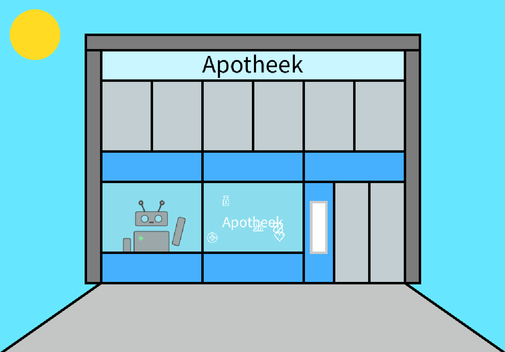
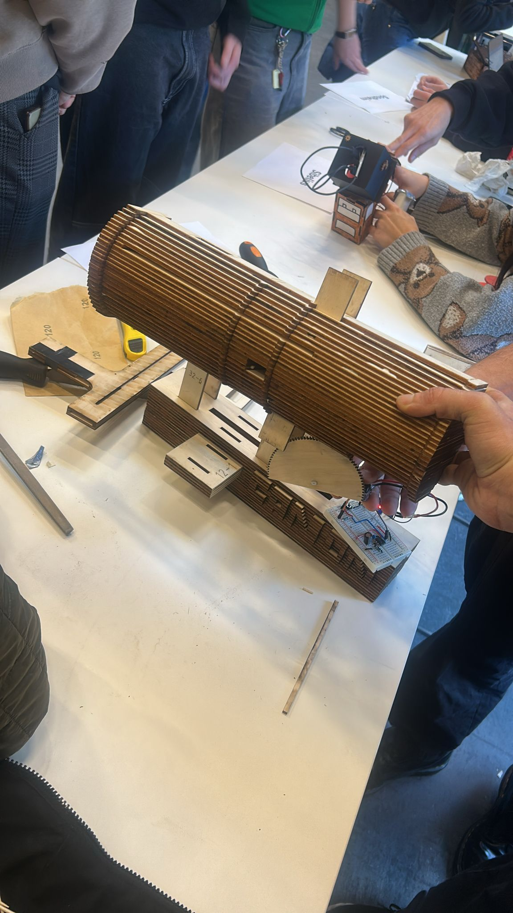
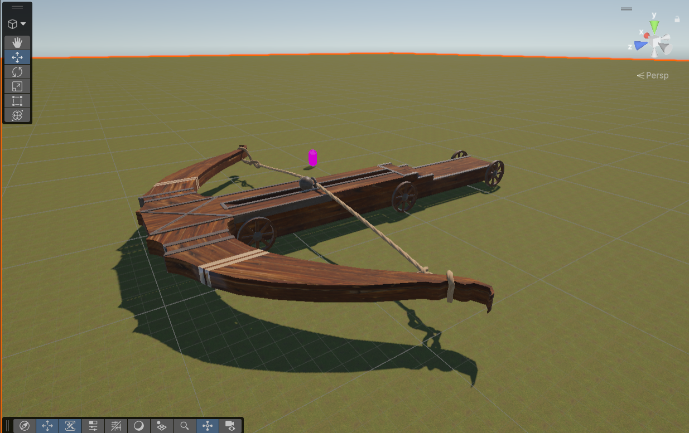
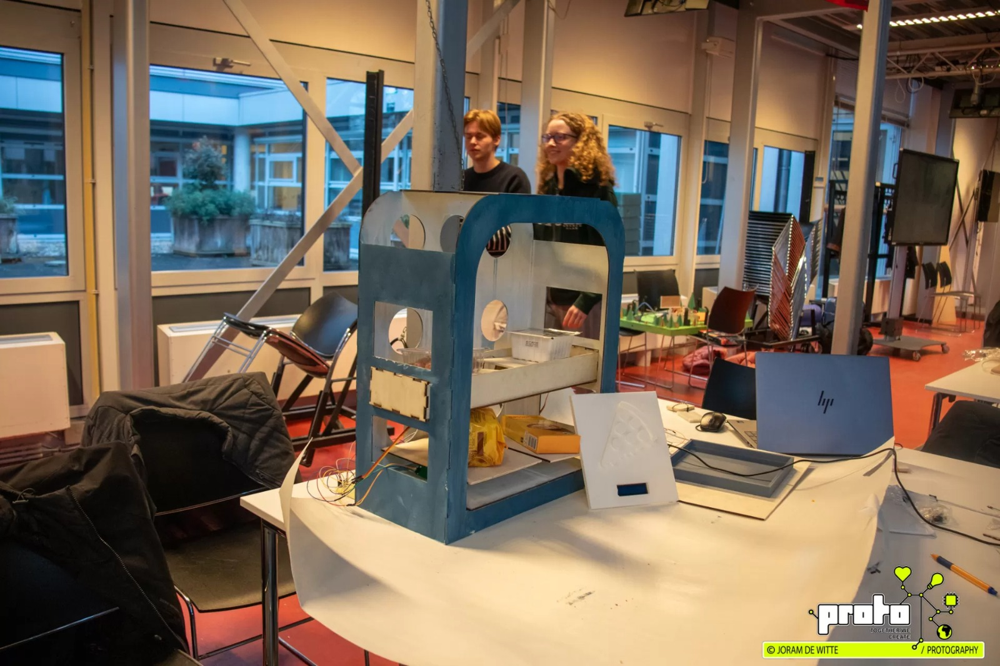
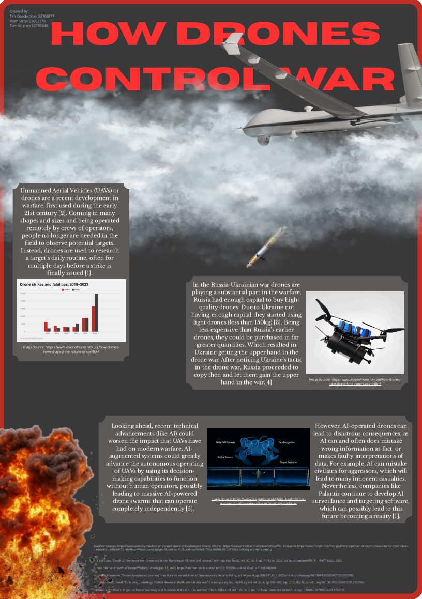

Processing end assignment
This is my end assignment for processing, it is a pharmacy where you can enter and choose which pills you want, then they will give them to you and you go outside again.

This is my end assignment for processing, it is a pharmacy where you can enter and choose which pills you want, then they will give them to you and you go outside again.

This is the second hackathon from module 1, in this project we made a coin gun, you could put coins in there and a mechanism would shoot it forward.

In this assignment we were tasked with making a drawing from leonardo da vinci in blender and giving it an animation through unity.

For this assignment we had to make a prototype for a product that would be better for the environment, we made a smart cabinet which restaurants could use. It made could detect that there were ingrients that would be leftover and would use these to substitute ingredients in other dishes.

For this assignment we had to make research poster on a current socio-technological challenge, we chose the current drone warfare that is happening around the world and based our poster on that.